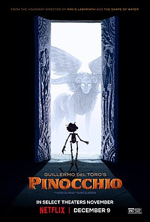

Guillermo Del Toro fala sobre sua vontade de realizar uma versão própria do conto de fadas Pinóquio há anos, talvez décadas - mas, se você não sabe disso antes de apertar o play no filme, que finalmente foi bancado e lançado pela Netflix, é fácil imaginar que o cineasta mexicano foi mão de obra contratada dos produtores. Como aconteceu com os longas de Tim Burton em certa altura de sua carreira, Pinóquio tem várias marcas visuais e narrativas de Del Toro, mas não encontra seu propósito em nenhum momento dos seus 117 minutos de duração.
